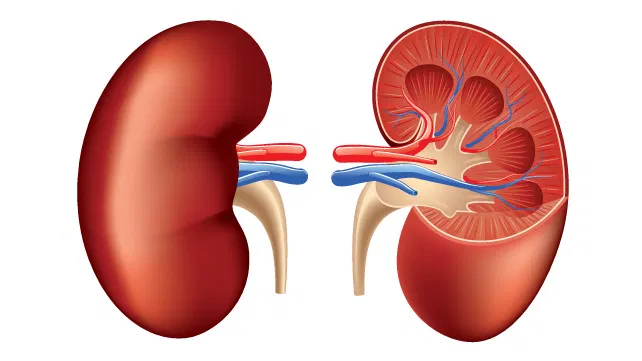

Kidney Cancer

SYMPTOMS
In many cases, people may have no early symptoms of kidney cancer. As the tumor grows larger, symptoms may appear. You may have one or more of these kidney cancer symptoms:
- Blood in your urine
-
A lump in your side or abdomen
-
A loss of appetite
-
A pain in your side that doesn't go away
-
Weight loss that occurs for no known reason
-
Fever that lasts for weeks and isn't caused by a cold or other infection
-
Extreme fatigue
-
Anemia
-
Swelling in your ankles or legs
DIAGNOSIS
To make a diagnosis of kidney cancer, your doctor will also order one or more tests like these:
- Urine tests check for blood in your urine or other signs of problems.
-
Blood tests show how well your kidneys are working.
Intravenous pyelogram (IVP) involves X-raying your kidneys after the doctor injects a dye that travels to your urinary tract, highlighting any tumors.
-
Ultrasound uses sound waves to create a picture of your kidneys. It can help tell if a tumor is solid or fluid-filled.
-
A CT scan uses X-rays and a computer to create a series of detailed pictures of your kidneys. This may also require an injection of dye. CT scans have virtually replaced pyelogram and ultrasound as a tool for diagnosing kidney cancer.
-
Magnetic resonance imaging (MRI) uses strong magnets and radio waves to create detailed images of soft tissues in your body. You may need an injection of a contrast agent to create better pictures.
-
Renal arteriogram. This test is used to evaluate the blood supply to the tumor. It is not given often, but may help diagnose small tumors. It has other uses, as well.
TREATMENTS
Common treatments include:
- Surgery for kidney cancer
-
Cryotherapy uses extreme cold to kill the tumor.
Radiofrequency ablation uses high-energy radio waves to "cook" the tumor.
-
Arterial embolization involves inserting material into an artery that leads to the kidney. This blocks blood flow to the tumor. This procedure may be done to help shrink the tumor before surgery.